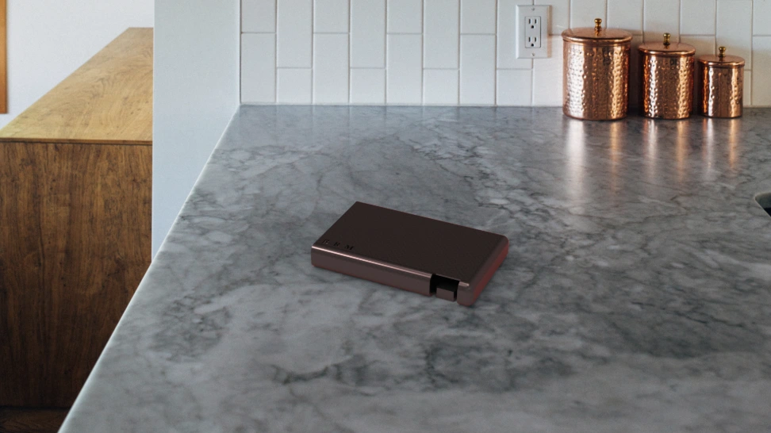
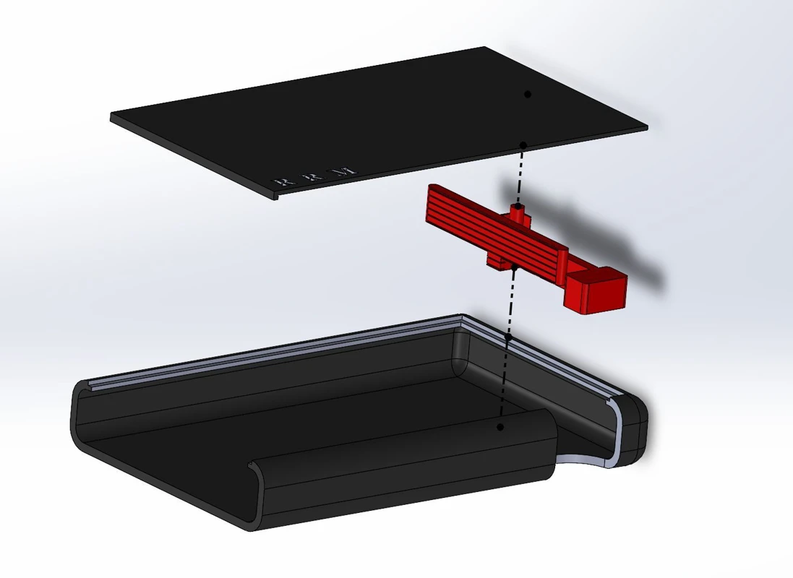
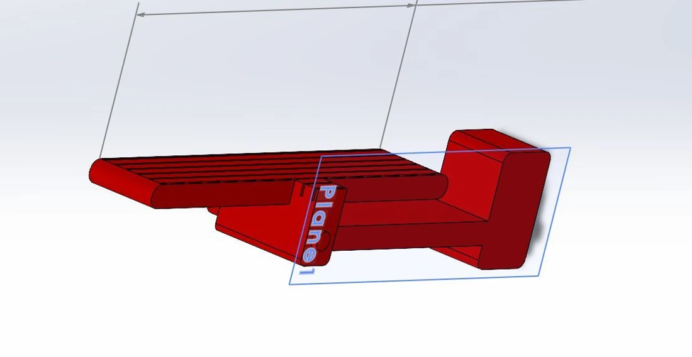
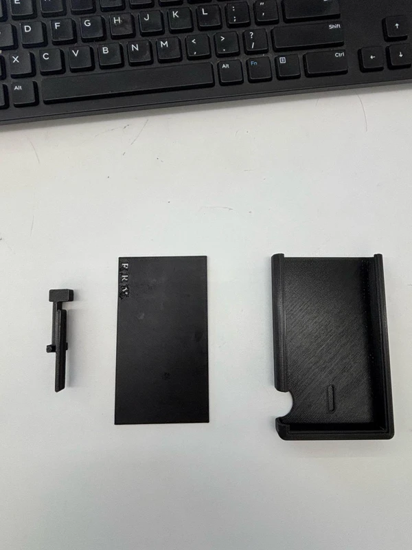

3D Engineering · ITP 233 Product Design
Sliding Card Wallet
Could I fit a sliding card ejector inside a wallet thin enough to carry?
For my individual Product Design project, I modeled a wallet around a thumb-operated lever in SolidWorks. I used KeyShot to see how the assembled product would look, then 3D printed the parts to see how the mechanism fit together. The print exposed a problem that was easy to miss on screen: a peg can have room to slide and still be too short to stay in its slot.

Designing Around the Slider

I split the wallet into three parts: a bottom housing, a top cover, and the ejection lever between them. The two covers needed a fixed mounting surface. The lever needed a guided path so it could move after I closed the case.
In SolidWorks, I sketched the profiles, cut slots, and extruded pegs to guide the lever. I added a mounting layer where the covers met. Keeping the lever as a separate part let me adjust its fit independently of the shell.
Making Room for Movement
The hardest dimension to see was the small gap between each peg and its slot. I used distance mates in the CAD assembly to set that clearance explicitly. That forced me to think about two dimensions separately: the space beside a peg that lets it slide, and the depth it needs to engage the slot.

What the First Print Revealed

I modeled in millimeters, and the wallet felt smaller in my hand than it had looked in the CAD viewport. On the print, the slots were too shallow and the pegs too short for the engagement I intended. PrusaSlicer also generated support around one peg that I couldn’t remove.
For a second iteration, I would print a short section of the guide first. I could vary peg height and slot depth, try a different print orientation, and check support removal by hand before printing another wallet. The most useful lesson from this project was learning which part to prototype first: the small moving joint that the whole design depended on.
Back to Technical Projects